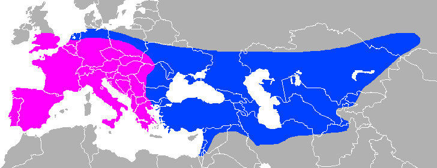
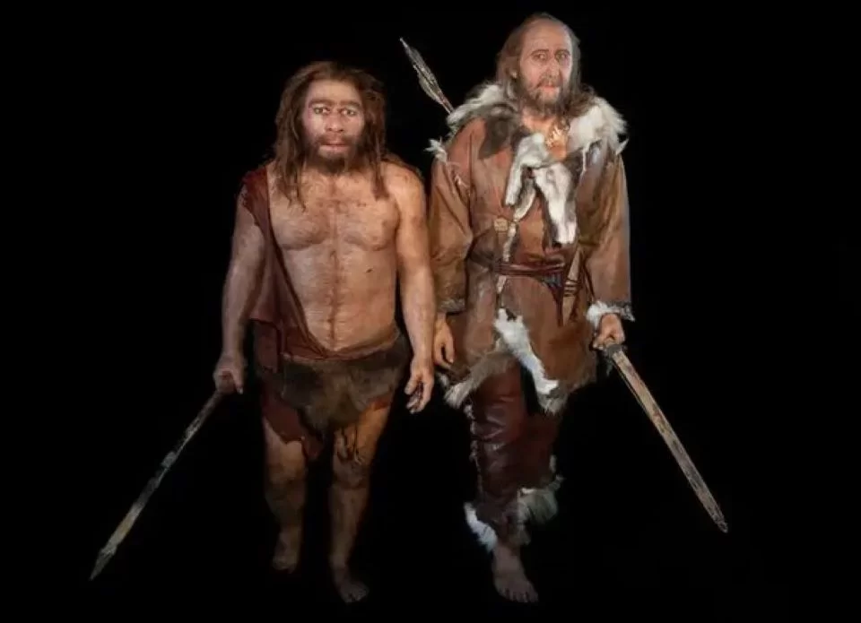

O Elo entre Neandertais e Sapiens
O Laço no dna
Um estudo inovador conduzido por pesquisadores da Universidade de Genebra proporciona novas perspectivas sobre a relação entre Neandertais e Homo sapiens nos últimos 40 mil anos.
Publicado na Science Advances, o estudo revela que, durante o período de transição em que os Neandertais deram lugar aos Homo sapiens, as duas espécies não apenas coexistiram, mas também interagiram, deixando um legado genético intrigante.
Imagem ilustrativa de um Neandertal




Ao analisar amostras de DNA de indivíduos dessa época, os cientistas identificaram variações sutis no tempo e no espaço das relações genéticas entre as espécies.
Surpreendentemente, cerca de 2% do DNA Neandertal persiste nas populações da Eurásia, com uma distribuição ligeiramente maior na Ásia do que na Europa. Essa assimetria levanta questões fascinantes sobre as influências da seleção natural e dos movimentos migratórios.
O foco da pesquisa foi nas populações europeias, onde a preservação de ossos e DNA é mais abundante devido à extensiva pesquisa arqueológica. Os cientistas identificaram um declínio na proporção de DNA Neandertal nos genomas europeus durante a transição para o Neolítico, coincidindo com a chegada de agricultores de Anatolia e da região do Egeu.
Esses agricultores carregavam uma proporção menor de DNA Neandertal do que as populações europeias da época, resultando em uma diluição adicional do legado genético Neandertal.
Imagem ilustrativa de um Neandertal e um Sapien.
O estudo destaca a importância de combinar análises genômicas com dados arqueológicos para traçar a história complexa da hibridização entre essas espécies humanas antigas.
Essa abordagem permitiu aos cientistas reconstruir diferentes estágios desse processo ao longo do tempo e do espaço, proporcionando insights valiosos sobre as interações genéticas que moldaram nossa história evolutiva.
Ler Mais
O Rosto do Passado
Brasileiros fazem reconstrução facial de egípcio que viveu há 35 mil anos.
Ler Mais
Os ossos de 2 mil anos atrás
Os mistérioso ossos de um jovem que nasceu no sul da Rússia e foram encontrados na Inglaterra.
Ler Mais
A escultura de ossos de Mamute
Arqueólogos descobriram uma escultura feita há 25 mil anos com ossos de mamute.
Ler Mais